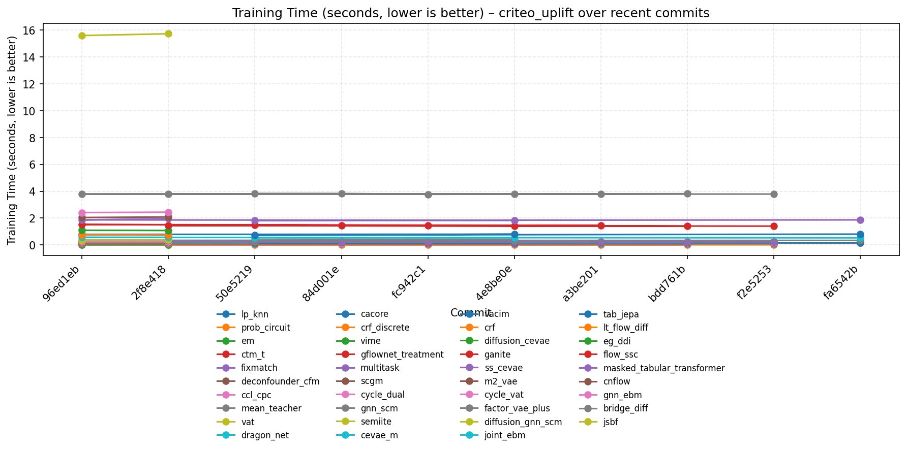

📊 Summary
Models Tested
12
- bridge
- cacore
- cycle
- diffusion
- dragon
- fixmatch
- flow
- ganite
- mean
- prob
- ss
- vat
Datasets Used
10
- cevae
- circuit
- criteo
- diff
- dual
- net
- nhefs
- ssc
- synthetic
- teacher
📈 Performance Overview

Trend – Validation Outcome RMSE (lower is better) on criteo_uplift

Trend – Validation Outcome RMSE (lower is better) on nhefs

Trend – Validation Outcome RMSE (lower is better) on synthetic

Trend – Validation Outcome RMSE (lower is better) on synthetic_mixed

Trend – Validation Outcome RMSE (lower is better) on synthetic_mixed_continuous

Trend – Validation Treatment Accuracy (higher is better) on criteo_uplift

Trend – Validation Treatment Accuracy (higher is better) on nhefs

Trend – Validation Treatment Accuracy (higher is better) on synthetic

Trend – Validation Treatment Accuracy (higher is better) on synthetic_mixed

Trend – Training Time (seconds, lower is better) on criteo_uplift

Trend – Training Time (seconds, lower is better) on nhefs

Trend – Training Time (seconds, lower is better) on synthetic

Trend – Training Time (seconds, lower is better) on synthetic_mixed

Trend – Training Time (seconds, lower is better) on synthetic_mixed_continuous

No benchmark results available.